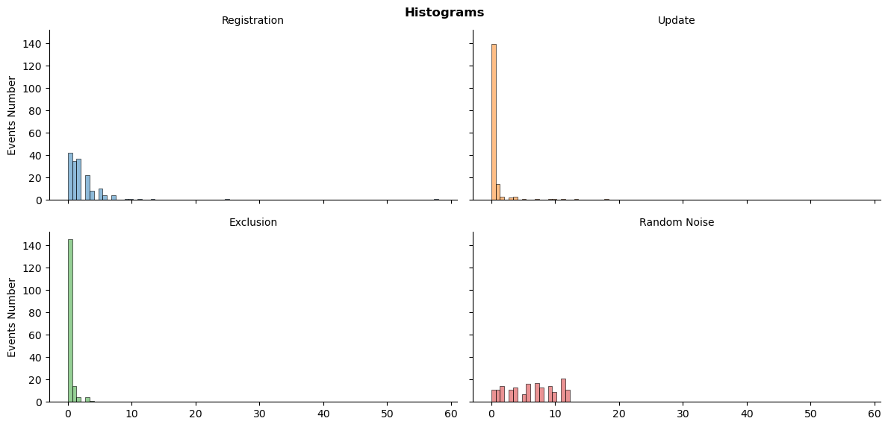
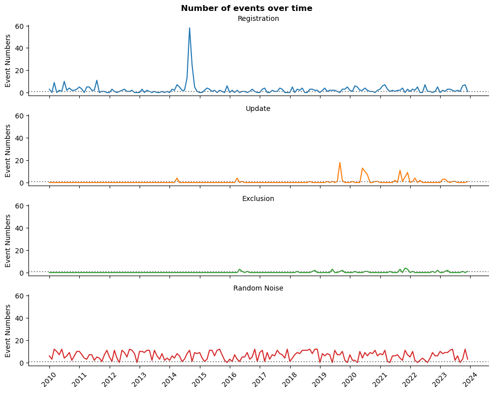
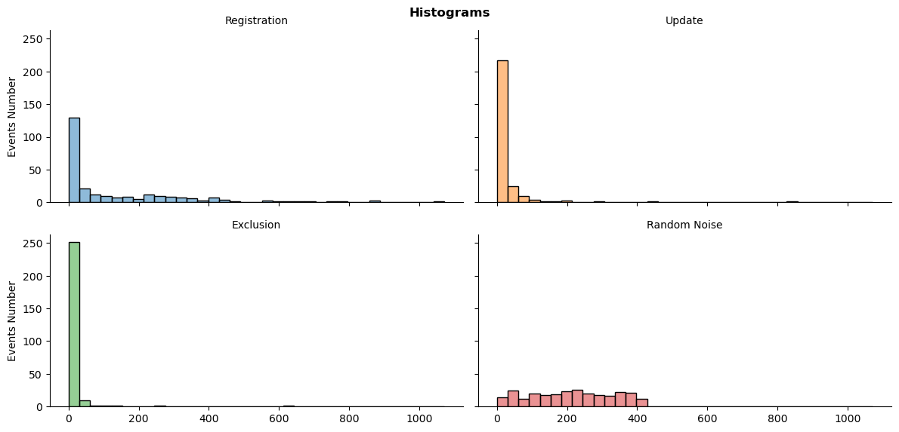
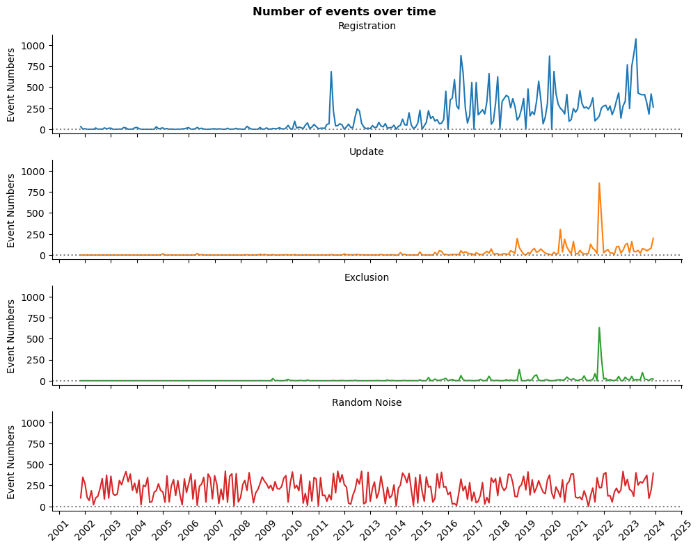
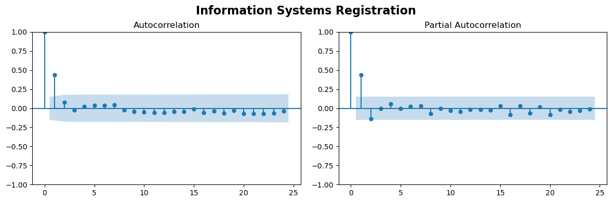
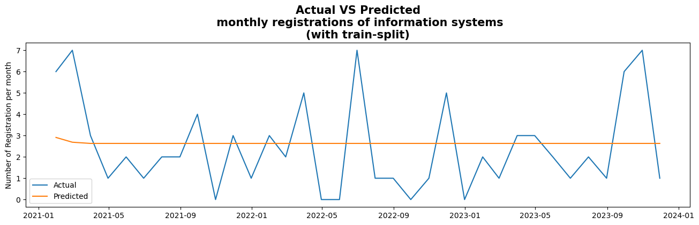
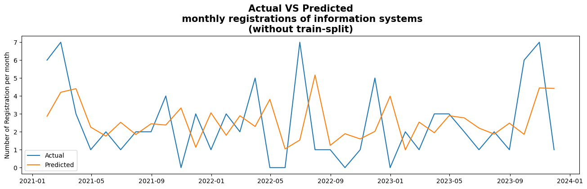
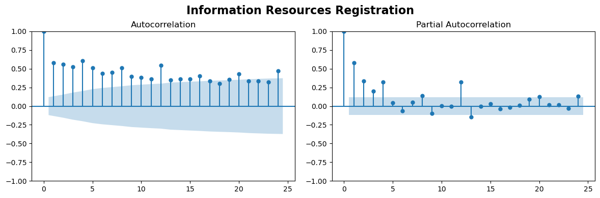
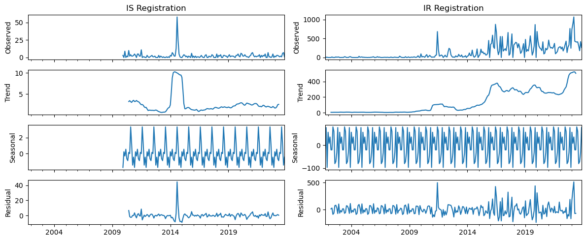

Registered Resources Time Series Analysis
11 December 2023
Category: Articles
Modified: 11.12.2023
Tags:
The topic: IR IS
Part 2 out of 2.
Previous topic articles:
Load Necessary Libraries
Modules
import pandas as pd
import numpy as np
import matplotlib.pyplot as plt
import matplotlib.dates as mdates
import seaborn as sns
import statsmodels.api as sm
Packages
from statsmodels.graphics.tsaplots import plot_acf, plot_pacf
from statsmodels.tsa.stattools import adfuller
from statsmodels.tsa.arima.model import ARIMA
Create custom function
Time series data frame creation function
def time_series(df):
'''Creates time series data frames with random noise'''
df_cols = ['reg', 'upd', 'exc']
min_df = min(df[df_cols].min())
max_df = max(df[df_cols].max()) + np.timedelta64(1, 'D')
df_ts = pd.date_range(start=min_df, end=max_df, freq='D', name='date').to_frame(name='ids')
for col in df_cols:
temp_df = df.groupby(col)['num'].count().to_frame(name=col)
df_ts = df_ts.merge(temp_df, how='left', left_index=True, right_index=True)
df_ts.drop(['ids'], axis=1, inplace=True)
df_ts[df_cols] = df_ts[df_cols].fillna(0).astype(int)
df_ts = df_ts.resample('M').sum() # reshape to monthly data, otherwise not enaugh data for conclusions
mean_rand = (int(np.mean(df_ts.max())) + 1) / 2 # create random noise for comparison with mean number
np.random.seed(seed=42) # create random state for reproducibility
df_ts['rand'] = np.random.randint(0, mean_rand, df_ts.shape[0])
return df_ts
Plots creation function
def ts_plot(df, kind):
'''Creates one of three seaborn multi-plots'''
melted_df = pd.melt(df, value_vars=['reg', 'upd', 'exc', 'rand'], # melted data frame is easier to use in seaborn
var_name='Event', value_name='Number', ignore_index=False)
melted_df.Event.replace(to_replace={'reg':'Registration', 'upd':'Update', 'exc':'Exclusion', 'rand':'Random Noise'}, inplace=True)
if kind == 'histogram':
g = sns.displot(data=melted_df, x='Number', col='Event', col_wrap=2, hue='Event', kind='hist', height=3, aspect=2, legend=False)
g.set_axis_labels('', 'Events Number')
g.set_titles('{col_name}')
g.fig.subplots_adjust(top=0.93)
g.fig.suptitle('Histograms', fontweight='bold')
elif kind == 'lineplot':
g = sns.relplot(data=melted_df, x='date', y='Number', row='Event', hue='Event', kind='line', height=2, aspect=5, legend=False)
g.set_axis_labels('', 'Event Numbers')
g.set_titles('{row_name}')
g.fig.subplots_adjust(top=0.93)
g.fig.suptitle('Number of events over time', fontweight='bold')
for ax in g.axes.flat:
ax.axhline(y=1, color='gray', linestyle=':')
ax.xaxis.set_major_locator(mdates.YearLocator())
ax.xaxis.set_major_formatter(mdates.DateFormatter('%Y'))
ax.xaxis.set_tick_params(rotation=45)
elif kind == 'boxplot':
g = sns.catplot(data=melted_df, x='Number', y='Event', kind='box', hue='Event', height=2, aspect=5.5, legend=False)
g.set_axis_labels('', '')
g.fig.subplots_adjust(top=0.93)
g.fig.suptitle('Boxplots', fontweight='bold')
else:
g = 'Nothing to show. Please, specify a histogram, a lineplot, or a boxplot'
return g
Augmented Dicky-Fuller test function
def adfuller_test(df):
d_cols = ['reg', 'upd', 'exc', 'rand']
p_val = []
texts = ['Registration p-value is', 'Update p-value is', 'Exclusion p-value is', 'Random p-value is']
con_h0 = 'When p-value is > 0.05 we can\'t reject H0, so time series is non-stationary \
(not stochastic or random process).'
con_h1 = 'When p-value is <= 0.05 we should reject H0, so time series is stationary \
(the result of stochastic or random process).'
for col in d_cols:
results = adfuller(df[col].values)
p_val.append(results[1])
return print(f'{con_h0}\
\n{con_h1}\n\
\n{texts[0]} {p_val[0]:.2f}.\
\n{texts[1]} {p_val[1]:.2f}.\
\n{texts[2]} {p_val[2]:.2f}.\
\n{texts[3]} {p_val[3]:.2f}.')
Seasonal decompasition plot creation function
def plot_seasonal(res, axes):
res.observed.plot(ax=axes[0], legend=False)
axes[0].set_ylabel('Observed')
axes[0].set_xlabel('')
res.trend.plot(ax=axes[1], legend=False)
axes[1].set_ylabel('Trend')
axes[1].set_xlabel('')
res.seasonal.plot(ax=axes[2], legend=False)
axes[2].set_ylabel('Seasonal')
axes[2].set_xlabel('')
res.resid.plot(ax=axes[3], legend=False)
axes[3].set_ylabel('Residual')
axes[3].set_xlabel('')
return axes
Load Data
Load specific date columns
# simplify column names
cols = ['num', 'reg', 'upd', 'exc']
# data related to registration, update, and exclusion of the information systems
sys_df = pd.read_csv('data/inf_sys.csv', parse_dates=[1,2,3], usecols=['numberOnRegistration',
'dateOnRegistration',
'dateActyalization',
'dateExclude'])
sys_df.columns = cols
# data related to registration, update, and exclusion of the information resources
res_df = pd.read_csv('data/inf_res.csv', parse_dates=[1,2,3], usecols=['numberOnRegistration',
'dateOnRegistration',
'dateActualization', 'dateExclude'])
res_df.columns = cols
Make a time series data frames
# information systems time series data frame
sys_df_dt = time_series(sys_df)
# information resources time series data frame
res_df_dt = time_series(res_df)
Descriptive analysis
Inspect information systems events
The total number of events distributions
ts_plot(sys_df_dt, 'histogram')
plt.show()

The distributions look highly skewed, that is the sign of non-stochastic process, especially in comparison to random numbers.
Boxplot details about total number of events
ts_plot(sys_df_dt, 'boxplot')
plt.show()

The number of registrations has more variance, however, the data has enormous outliers.
# Let's have a look at our outliers
sys_df_dt.reg.sort_values(ascending=False)[:3]
date
2014-08-31 58
2014-09-30 25
2014-07-31 13
Name: reg, dtype: int64
The top three outliers are from the second half of 2014.
Monthly events changes over time
ts_plot(sys_df_dt, 'lineplot')
plt.show()

The plot do not demonstrate any obvious trend or seasonality, except already mentioned peak.
Exclusions from register or record modification are relatively rare events.
The augmented Dicky-Fuller test for stationarity
- H0 - time series is non-stationary
- H1 - time series is stationary
adfuller_test(sys_df_dt)
When p-value is > 0.05 we can not reject H0, so time series is non-stationary (not stochastic or random process).
When p-value is <= 0.05 we should reject H0, so time series is stationary (the result of stochastic or random process).
Registration p-value is 0.00.
Update p-value is 0.00.
Exclusion p-value is 0.00.
Random p-value is 0.00.
So, we can build predictive model. However, the most promising is the number of registration per month.
Let’s take a look at another data frame.
Inspect information resources events
The total number of events distributions
ts_plot(res_df_dt, 'histogram')
plt.show()

The distributions are also skewed. However, the number of registrations is more balanced.
Boxplot details about total number of events
ts_plot(res_df_dt, 'boxplot')
plt.show()

Despite outliers, the variance of the number of registration is closer to random integers.
Monthly events changes over time
ts_plot(res_df_dt, 'lineplot')
plt.show()

First impressions are that we might have a trend and seasonality at the number of registration. Other data represents more rare events, which are out of our interests at the moment.
The augmented Dicky-Fuller test for stationarity
- H0 - time series is non-stationary
- H1 - time series is stationary
adfuller_test(res_df_dt)
When p-value is > 0.05 we can not reject H0, so time series is non-stationary (not stochastic or random process).
When p-value is <= 0.05 we should reject H0, so time series is stationary (the result of stochastic or random process).
Registration p-value is 0.80.
Update p-value is 0.56.
Exclusion p-value is 0.00.
Random p-value is 0.00.
Because we will focus on the number of registration, it is important that this monthly number have a statistically significant trend and seasonality. So, this data should be treated with caution.
Exploratory Analysis
ARIMA modeling
Information Systems
# Let's narrow down the time series
sys_dt_reg = sys_df_dt['reg']
# Now, check it's property for ARIMA models choose
fig, axs = plt.subplots(1,2, figsize=(12,4))
plot_acf(sys_dt_reg, lags=24, alpha=0.05, ax=axs[0], title='Autocorrelation')
plot_pacf(sys_dt_reg, lags=24, alpha=0.05, ax=axs[1], title='Partial Autocorrelation')
fig.tight_layout(pad=1.5)
fig.subplots_adjust(top=0.85)
fig.suptitle('Information Systems Registration', fontsize=16, fontweight='bold')
plt.show()

The results show that we can employ quite simple model. Nevertheless, we will check our possible solutions.
The data is stationary, so, ‘d’ not need to be specified.
# Train data - all data up to the end of 2018
sys_dt_train = sys_dt_reg.loc[:'2020']
# Test data - all data from 2019 onwards
sys_dt_test = sys_dt_reg.loc['2021':]
# Loop over AR order
order_aic_bic =[]
for p in range(3):
# Loop over MA order
for q in range(3):
# Fit model
model = ARIMA(sys_dt_train, order=(p,0,q))
results = model.fit()
# Add order and scores to list
order_aic_bic.append((p, q, results.aic, results.bic))
# Make Data Frame of model order and AIC/BIC scores
order_df = pd.DataFrame(order_aic_bic, columns=['p','q', 'aic', 'bic'])
best_aic = order_df.sort_values('aic')[:1]
best_bic = order_df.sort_values('bic')[:1]
print(f'{best_aic}\n{best_bic}')
p q aic bic
2 0 2 813.999859 825.561255
p q aic bic
1 0 1 814.682108 823.353156
# Fit model
model_sys_reg = ARIMA(sys_dt_train, order=(0,0,2))
model_sys_reg_fit = model_sys_reg.fit()
# Prediction
start_index = '2021-01-31'
end_index = '2023-11-30'
model_sys_pred = model_sys_reg_fit.predict(start=start_index, end=end_index)
# Create a quality plot
plt.figure(figsize=(16,4))
plt.plot(sys_dt_reg.loc['2021':], label='Actual')
plt.plot(model_sys_pred, label='Predicted')
plt.title('Actual VS Predicted\n monthly registrations of information systems\n(with train-split)', fontsize=15, fontweight='bold')
plt.ylabel('Number of Registration per month')
plt.legend()
plt.show()

Thus, despite that, the model is simple. It has not a lot of predictive power for unseen data.
# Fit model
model_sys_explain = ARIMA(sys_dt_reg, order=(0,0,2))
model_sys_explain_fit = model_sys_explain.fit()
# Prediction
start_index = '2021-01-31'
end_index = '2023-11-30'
model_sys_explain_pred = model_sys_explain_fit.predict(start=start_index, end=end_index)
# Create a quality plot
plt.figure(figsize=(16,4))
plt.plot(sys_dt_reg.loc['2021':], label='Actual')
plt.plot(model_sys_explain_pred, label='Predicted')
plt.title('Actual VS Predicted\n monthly registrations of information systems\n(without train-split)', fontsize=15, fontweight='bold')
plt.ylabel('Number of Registration per month')
plt.legend()
plt.show()

As you can see, without train-split data, the results relatively good. So, this model can be explanatory, but not definitely not predictive.
# Check errors
residuals_sys = model_sys_reg.fit().resid
mae_sys = np.mean(np.abs(residuals_sys))
average = sys_dt_reg.mean()
var = sys_dt_reg.std()
print(f'Mean absolute error is {mae_sys:.2f},\nwhile data frame average is {average:.2f},\nand standard deviation is {var:.2f}.')
Mean absolute error is 2.18,
while data frame average is 2.59,
and standard deviation is 5.15.
Information Resources
# Let's narrow down another time series
res_dt_reg = res_df_dt['reg']
fig, axs = plt.subplots(1,2, figsize=(12,4))
plot_acf(res_dt_reg, lags=24, alpha=0.05, ax=axs[0], title='Autocorrelation')
plot_pacf(res_dt_reg, lags=24, alpha=0.05, ax=axs[1], title='Partial Autocorrelation')
fig.tight_layout(pad=1.5)
fig.subplots_adjust(top=0.85)
fig.suptitle('Information Resources Registration', fontsize=16, fontweight='bold')
plt.show()

We clearly see that we have annual seasonality. So, this data would be a bit more complicated than information systems registration data.
Check for trends and seasonality
res_reg = sm.tsa.seasonal_decompose(sys_dt_reg)
res_upd = sm.tsa.seasonal_decompose(res_dt_reg)
fig, axes = plt.subplots(ncols=2, nrows=4, sharex=True, figsize=(12,5))
plot_seasonal(res_reg, axes[:,0])
plot_seasonal(res_upd, axes[:,1])
cols = ['IS Registration', 'IR Registration']
for ax, col in zip(axes[0], cols):
ax.set_title(col)
plt.tight_layout()
plt.show()

Information resources data have and seasonality, and upstream trend, and the variance density becomes compacted.
Suppose that the next step for us would be to employ machine learning models for analysis of these data frames, and make predictions.